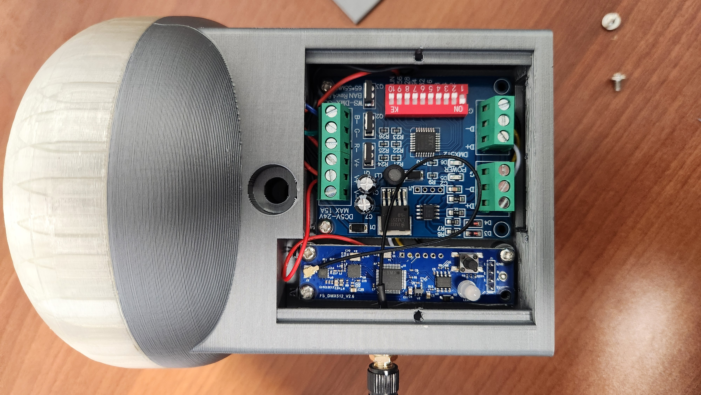

How to enhance a pyromusical show beyond the pyrotechnics with the added difficulty of being a floating 4-barge show over water. Simple answer: lights.

Every year since 1999, my father and I — with the help of some neighbors — have put on a professional fireworks show, with a habit of enhancing it each year. After becoming licensed pyrotechnicians, the job of enhancing the 4 floating barge shows got easier: we went bigger.
But that had safety limitations. We were capped at a certain size of "boom." So we asked ourselves: what else could we do to make the pyromusical show even better?
The idea: Add wireless DMX-controlled lighting to the floating perimeter buoys and on each barge. Seems easy, right?
Each perimeter floating buoy is independent of the others — relatively cheaply constructed from PVC pipe, weighted at one end, with a fishing buoy for flotation and a solar rechargeable static LED light on top.
The questions started piling up fast:
This turned out to be far more complex than originally anticipated — touching on electronics, power management, mechanical design, and manufacturing all at once.
3D design and print a custom light housing that could contain readily available circuit boards, batteries, and LED strip lighting sourced globally. The approach:
Several versions were tested — mostly for fit, some for function and wire routing efficiency. Plans were drawn and redrawn multiple times as I overcame my learning curve with Fusion 360. Each iteration brought the design closer to a reliable, compact, waterproof unit that could be quickly assembled and deployed on the water.
The finished wireless DMX light was tested on the water. Here's it in action:
Final product test — wireless DMX LED light deployed on the water